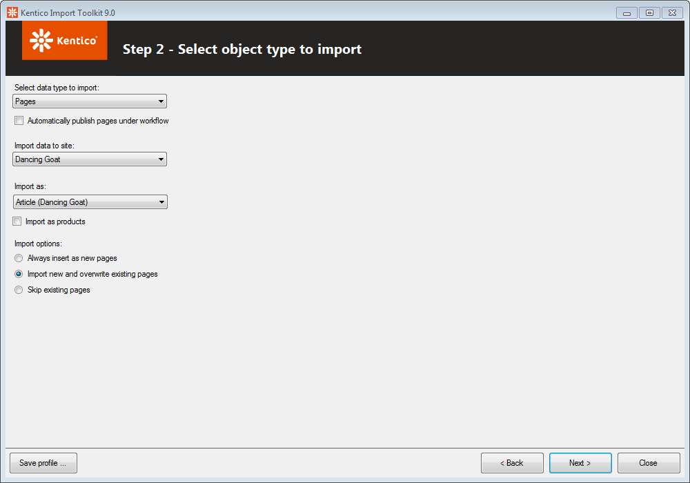
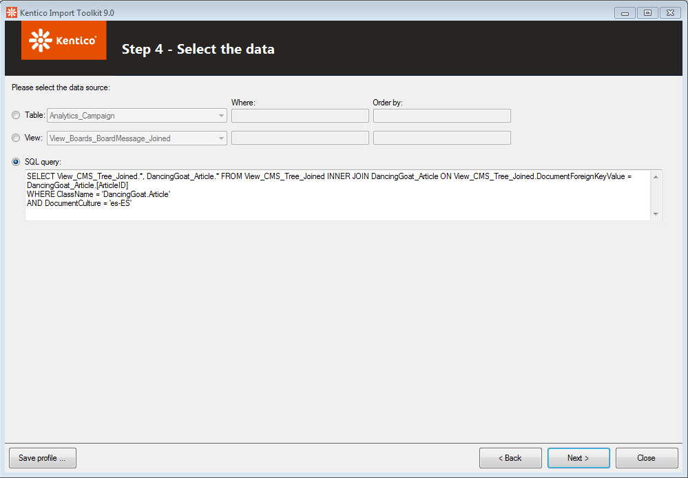
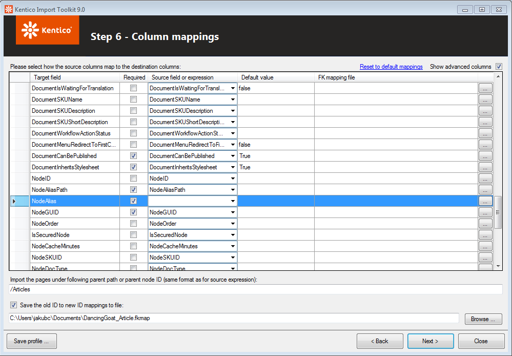

Example - Importing a culture version of a page using the Kentico Import Toolkit
The following example demonstrates how to import a new culture version of a page.
Important: When using the import toolkit to add language versions to an existing page (node in the content tree), your source data must contain a column with appropriate NodeAliasPath or NodeID values. These values are required for the import to match data records to corresponding content tree nodes (for more information, see Page database structure).
This example imports an Article page from one Kentico database to another.
Run the utility from Windows Start -> All Programs -> Kentico <version> -> Utilities -> Kentico Import Toolkit.
Choose Start new import session.
Click Next.
Step 1
Choose the folder of the target project into which the data will be imported.
Backup your data and confirm that you know the risks associated with importing.
Click Next.
Step 2
Choose Pages from the Select data type to import drop-down list.
Select a site where you want to import the page in the Import data to site drop-down list.
Select the Article page type from the Import as drop-down list.
Select Import new and overwrite existing pages from the Import options.

Configure the settings for importing language versions of documentsClick Next.
Step 3
Provide the source MS SQL database information and the authentication information.
Click Next.
Step 4
Select the SQL query option.
Enter an SQL query selecting the culture version of pages that you want to insert. For example, the following SQL query selects pages of the DancingGoat.Article page type in the es-ES culture:
SELECTView_CMS_Tree_Joined.*, DancingGoat_Article.*FROMView_CMS_Tree_JoinedINNERJOINDancingGoat_ArticleONView_CMS_Tree_Joined.DocumentForeignKeyValue = DancingGoat_Article.ArticleIDWHEREClassName ='DancingGoat.Article'ANDDocumentCulture ='es-ES'

Select the News documents form the source databaseClick Next.
Step 5
Confirm your data selection and click Next.
Step 6
Enable the Show advanced columns option.
If the advanced column fields are not filled in automatically, click Back once and Next again to refresh the view.
Check whether the NodeAliasPath target field is mapped to the NodeAliasPath source field.
Erase the NodeAlias field. It must remain blank in order to import a new culture version of the same page.
Type the parent path of the pages into the text field below the data grid (you can use macros).

Adjust the column mappings for importing language versions of pagesClick Next.
Step 7
Click Import data.
Step 8
After a successful import of multilingual pages, you should see the number of items that were created in the target database. Close the dialog.